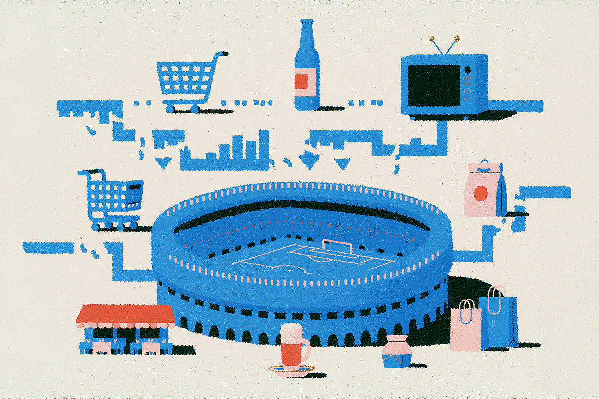
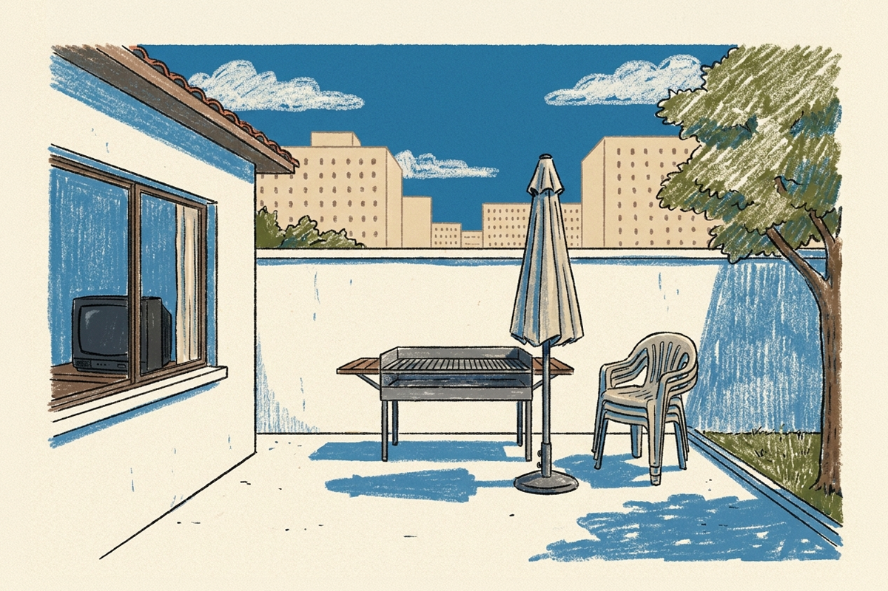
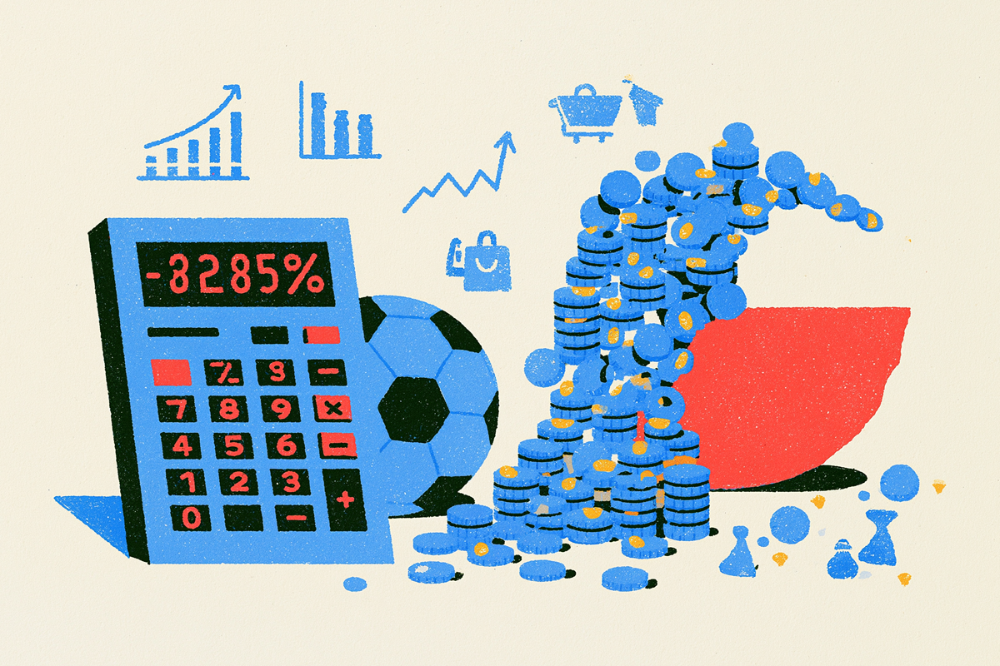

¿Cuánto perdió Chile por no estar en el Mundial?
La cuenta que nadie quiere sacar (pero nosotros sí)
La cuenta que nadie quiere sacar (pero nosotros sí)

Chile no está en el Mundial 2026. Ya lo sabemos, ya dolió, ya hicimos memes tristes y nos resignamos a ver la Copa del Mundo desde la casa. Pero mientras otros países celebran su clasificación, hay una conversación que ha pasado bastante desapercibida: quedar fuera de un Mundial no solo golpea en lo deportivo o en lo emocional, también tiene un impacto económico enorme en el país.

Partamos por lo más evidente. Para el Mundial 2026, la FIFA aseguró un mínimo de US$12,5 millones para cada selección clasificada: US$10 millones solo por obtener el cupo y US$2,5 millones destinados a la preparación del torneo. Incluso el equipo que pierda sus tres partidos en la fase de grupos recibe esa plata. Es, literalmente, plata por estar y participar.
En pesos chilenos, hablamos de una cifra en torno a los $12 mil millones que la ANFP simplemente no vio. Plata que en otros países se reinvierte en fútbol formativo, infraestructura y desarrollo de jugadores. Justamente todo lo que los deportistas siempre alegan que no se hace por falta de presupuesto. No clasificar hoy también hace más difícil clasificar mañana: un círculo vicioso con un precio caro a pagar.
Y eso es solo el piso. Una selección que avanza a octavos se lleva US$15 millones o más. El campeón se lleva US$50 millones.

Pero el premio de la FIFA es solo una parte de la historia. El impacto más grande se siente dentro del país, en el consumo que un Mundial suele generar y que, esta vez, Chile simplemente no tendrá.
Según NielsenIQ, durante los torneos mundialistas las ventas de cerveza pueden aumentar hasta un 50% y las de snacks cerca de un 60%. En España, los principales retailers proyectan alzas de entre un 18% y un 30% en la venta de televisores para este Mundial, mientras que se estima que, si la selección llega a la final, el gasto adicional de los hogares superaría los 130 millones de euros.
Cuando juega la selección, millones de personas se reúnen para ver los partidos, organizan asados, compran comida, bebidas, camisetas o incluso aprovechan para cambiar el televisor. Cada partido mueve el consumo y beneficia a supermercados, bares, restaurantes, servicios de delivery y tiendas de tecnología. Durante un Mundial, el gasto se concentra en torno a un mismo evento, algo que pocas veces ocurre con esa intensidad.
¿Y en Chile? Nada de eso ocurre con la misma fuerza. Sin la Roja en cancha, no hay "partido de Chile" que paralice al país, no hay peak de venta de camisetas, no hay asado obligado de fase de grupos. El retail no arma sus campañas más agresivas, las marcas guardan los presupuestos publicitarios que habrían quemado en junio, los bares no se llenan un martes a la hora de almuerzo.
Es difícil ponerle una cifra exacta a ese impacto, pero al sumar todas esas ventas que nunca ocurrieron, el costo para el comercio chileno termina siendo de decenas de miles de millones de pesos que simplemente dejaron de circular.

No es que el Mundial pase inadvertido. En otros países, la gente también se junta a ver partidos que no son de su selección. Acá pasa algo parecido: igual vemos los partidos, igual cae un asado para una semifinal, igual alguien compra una tele nueva "porque justo estaba en oferta".
La diferencia es la intensidad. Sin equipo propio, el consumo mundialero funciona a media máquina: hay interés, pero no hay euforia. Y la euforia es justamente el motor económico del evento. Las marcas lo saben mejor que nadie y por eso las campañas más grandes de la región este año se están jugando en Buenos Aires, São Paulo y Bogotá. No en Santiago.
No clasificar a un Mundial siempre duele en lo deportivo, pero no hay que olvidar el costo económico. Se pierde el premio de la FIFA, disminuyen las oportunidades para el fútbol local y se enfría un impulso de consumo que beneficia a miles de negocios, desde el gran supermercado hasta el almacén de barrio.
Al final, quedarse fuera del Mundial no solo significa perder la posibilidad de competir en la cancha. También significa dejar pasar una oportunidad de mover la economía, generar ingresos y aprovechar uno de los eventos de consumo más importantes del planeta. Esa es la cuenta que casi nadie saca y que vale la pena tener en cuenta para el futuro.
 Finanzas
FinanzasSi últimamente has abierto LinkedIn, probablemente lo has visto: parece que todos hablan del “futuro del trabajo”.
 Finanzas
FinanzasHace casi dos años me vine a vivir a Italia y llegué con una idea muy instalada en la cabeza: que todo iba a ser mucho más caro que en…
 Finanzas
FinanzasAtrás han quedado los tiempos donde los vuelos se compraban con agencias de turismo. En las últimas décadas y con la modernización de los…